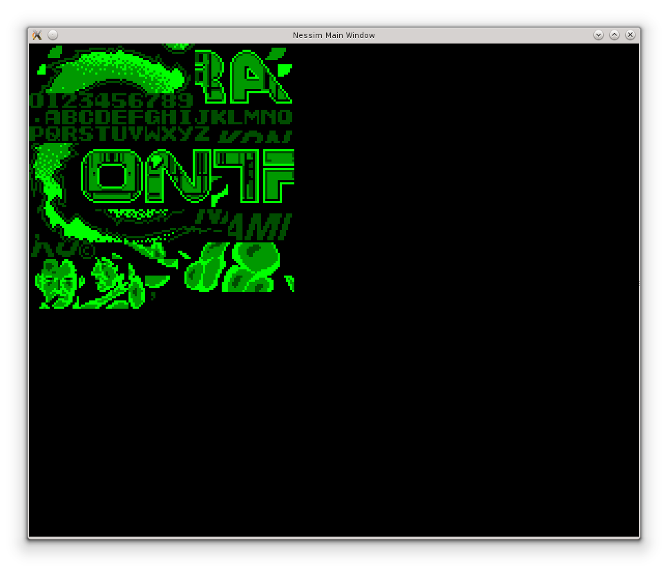
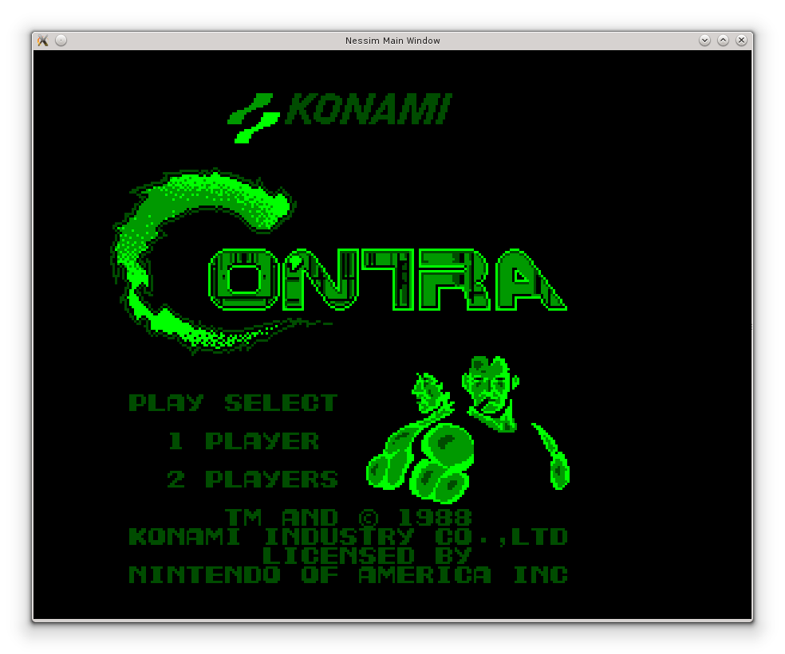
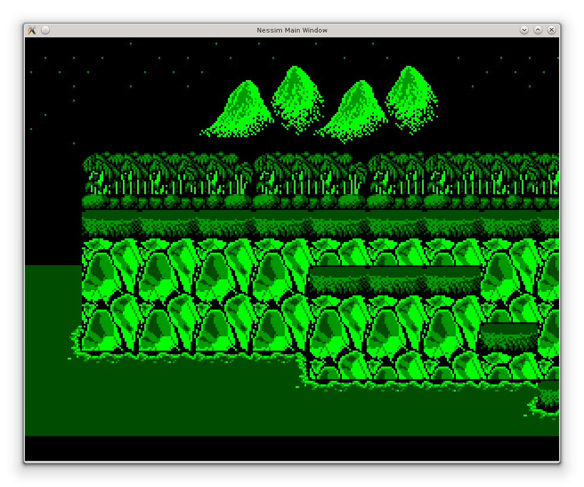
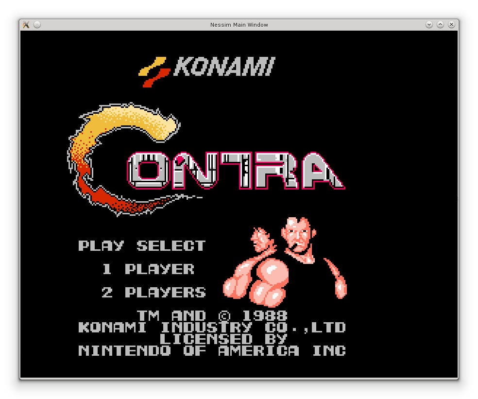
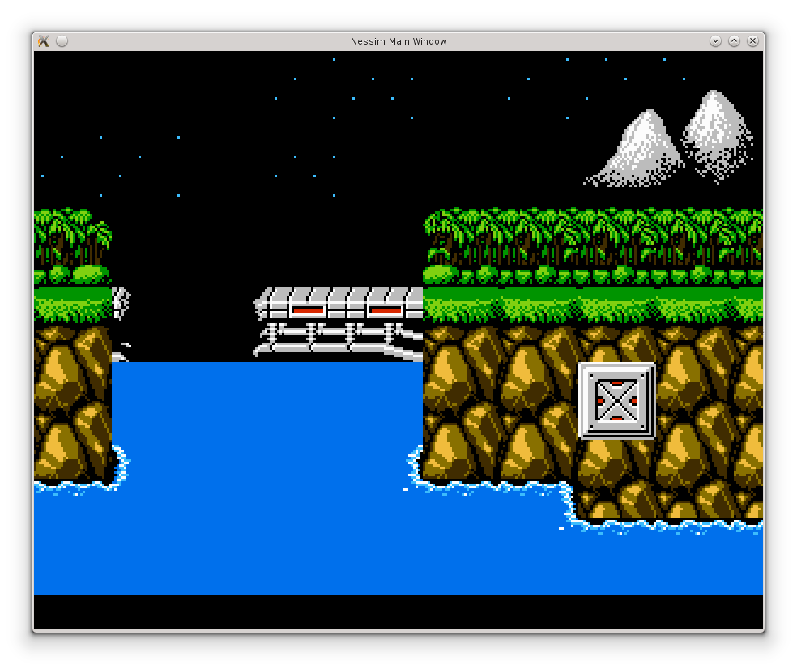
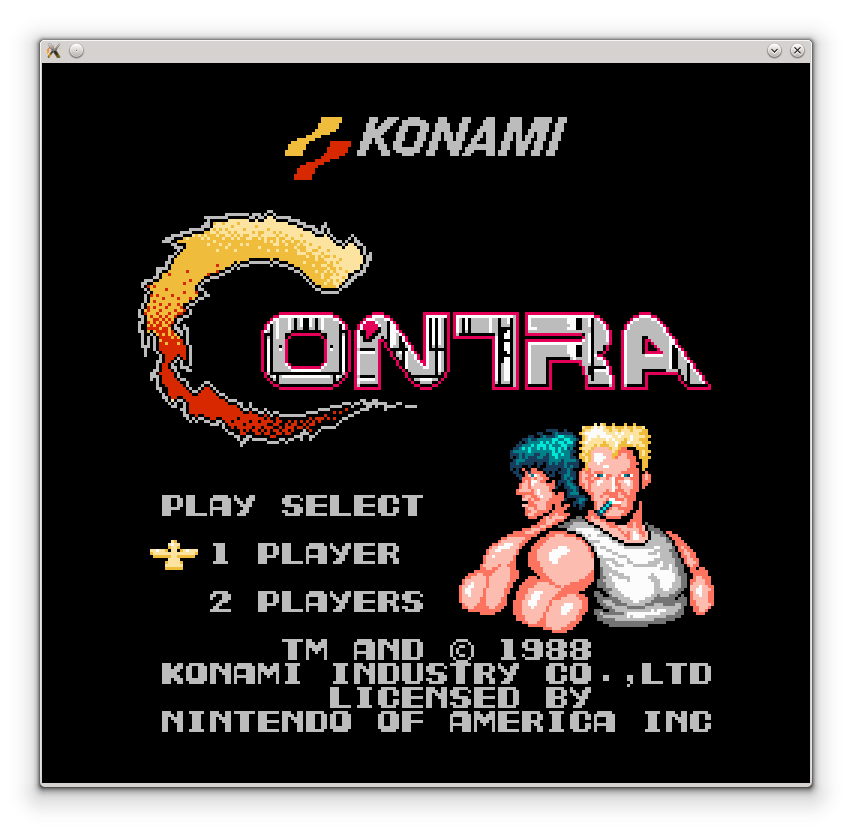
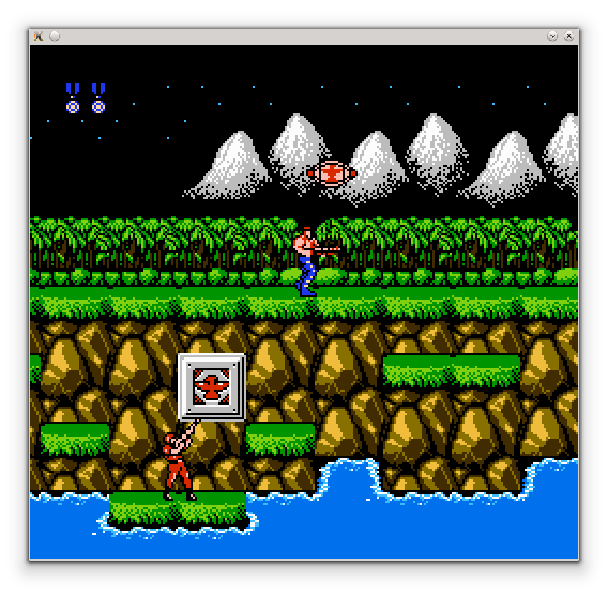

|
|
In this project, a Nintendo Entertainment System clone is implemented in VHDL and uploaded to Nexys 2 board. NES/Famicom is certainly one of the coolest game consoles ever. NES devices, games, and simulators are available everywhere nowadays. It's really enjoyable to see the video games that I used to play in my childhood running on an architecture of my own design. This lets me understand how these games and NES work from the inside. This answers the question "How do these things really work?" that I used to ask myself everytime I used NES in my childhood. BTW I am still playing NES games. I use a NES simulator called nestopia on GNU/Linux.
Note that I am not the first one to do this. It doesn't add anything to the world, but it adds to my knowledge; This is an enough reason to go ahead on the project.
Technically, NES mainly consists of these components:
The project is two phases. Phase 1 is to implement a simulator in C. This simulator allowed me to understand the hardware correctly before I start working on the FPGA. Phase 2 is to implement the machine in VHDL and get it to work on Nexys 2.
I started working on the simulator in July 2014. The first step was to write a 6502 emulator. Debugging the 6502 emulator wasn't easy... I had to run some NES games and expect how should they behave, then watch how they actually behave on my emulator (instruction by instruction). There was a little bug in the tax instruction (and her sisters) that drove me crazy for two days until I found it (I forgot to modify the Z and N registers on the termination of tax, and this made the games do very unexpected things xD). It was exciting when the games started to behave correctly using the simulator.
Next step was to implement the cartridge logic, a parser for .nes files, memory, etc... The PPU was an important part. I first wrote a PPU that paints the patterns of Contra on screen. It started to behave correctly when I solved the bug issues of the 6502 simulator.

Then implemented the name table logic:


And then, I implemented the palette logic:


And finally, the sprites, scrolling, game controller logic, etc...


Actually, there are some bugs in the APU and the PPU, but I chose to work on the hardware implementation first, then work on these bugs when I have free time. The main objective from the simulator was to understand the internals of NES before going into the hardware, not to replace nestopia and other simulators. Therefore those bugs are not important now.
Working on the 6502 emulator provided me with good knowledge of the details of 6502. This helped me implement my own 6502 clone in VHDL. Details about the processor can be found at the 6502 computer on FPGA article.
The next step is to work on the PPU, which will be based on the CRT controller of 6502 computer on FPGA. The project was aborted.